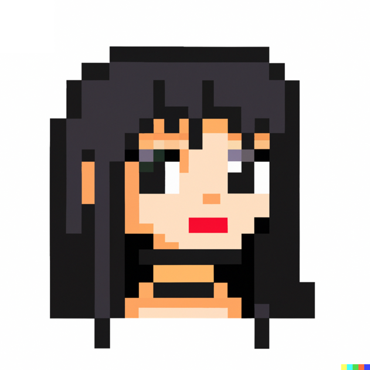

About Me
Hi, I'm Rosa! I'm a freelance translator and interpreter with a passion for languages and cultures. I have experience working in a variety of fields, including medical, legal, and entertainment translation. I'm also specializing in localization, proofreading and project management🧙. When I'm not working, you can find me reading web comics, exploring new languages, or practicing yoga.
Skills
- Translation,
- Subtitling,
- Localization,
- Proofreading,
- Project management
Background
Graduate student at UNIGE in the Department of Translation and Interpreting.
Bachelor degree in Translation and Interpreting by the Universidad Femenina del Sagrado Corazón (2015).
Language combination
English to Spanish (Latam).
Work experience
Freelance Translator/Interpreter
Independent · Autonomous | Oct. 2019 - Present · 3 years 6 months
Translation and interpreting services. Use of CAT tools, and experience in PM & QA.
Skills: CAT tools · Spanish · QC ·PM · English · Time management
Bayi LLC
Official Webcomic Translator and Quality Checker for Bilibili Comics in Spanish
Independent Professional | Mar. 2022 - Feb. 2023 · 1 year
SPA translation and localization
Skills: Comic · Spanish · QC · Translation · English
CQ fluency
Translation Project Coordinator
Seasonal | May 2022 - Nov 2022 · 7 months
Freelance Project Coordinator
Independent Professional | Mar. 2022 - May 2022 · 3 months
- Proceed with the clients' requests to convert them into quotes/orders
- Manage medical projects in different languages and ensure the timely delivery of each project
- Provide quotations, invoices, and purchase orders for clients and vendors
- Select and assign appropriate vendors for assignments and schedule project timelines
- Monitor and control the status of projects
Skills: Translation Project Management · Computer-Assisted Translation (CAT) Tools
Jefa de Prácticas Pre Beginner I
Universidad Privada del Norte · Part-time | Aug. 2020 - Dec. 2021 · 1 year 5 months
Translator/Interpreter
Juegos Panamericanos y Parapanamericanos Lima 2019
Feb. 2017 - Sept. 2019 · 2 years 8 months